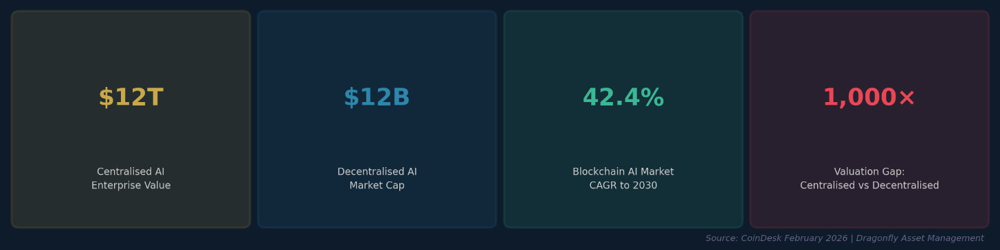
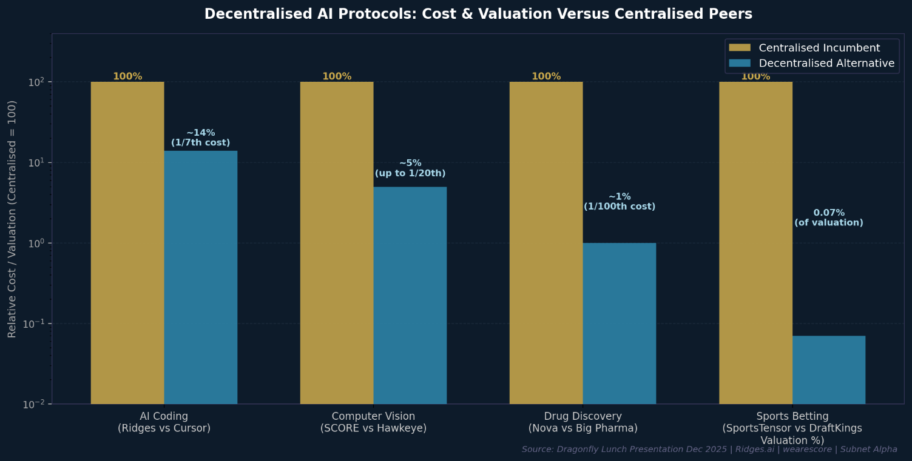
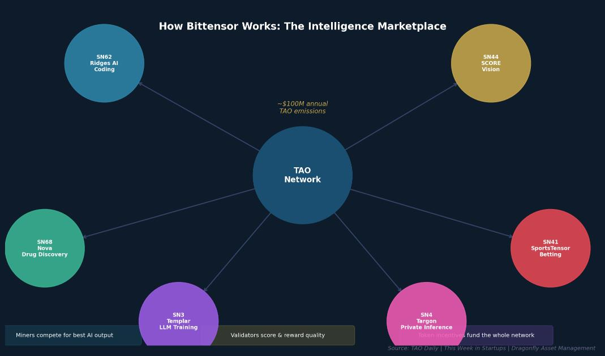
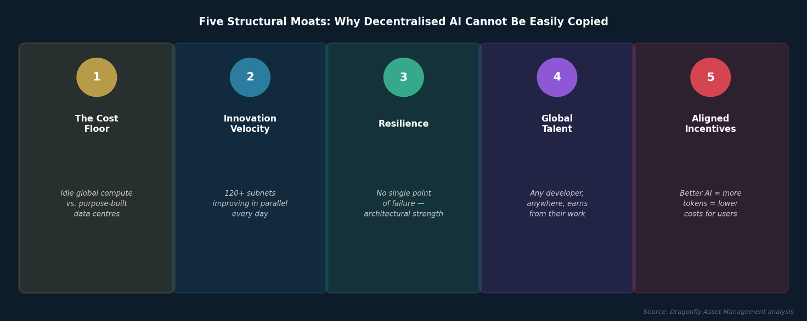
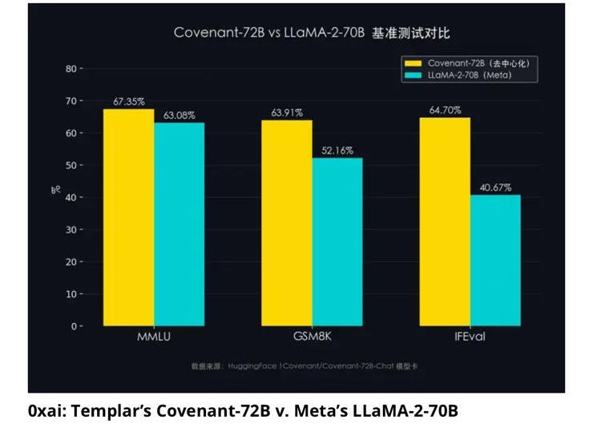
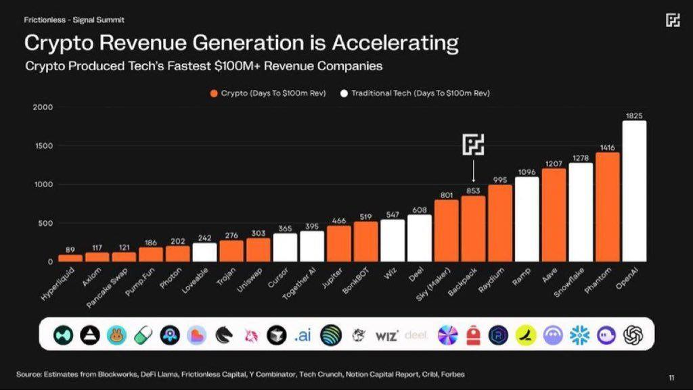
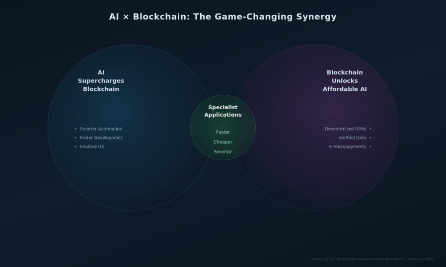
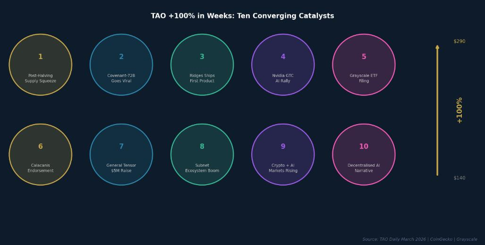

The Great AI Arbitrage:
Same Intelligence, 1/100th the Cost
Why Decentralised AI Will Erode Centralised AI's $12 Trillion Monopoly
Important Notice & Risk Disclosures
This report has been prepared by Dragonfly Asset Management for informational purposes only. It is intended for use solely by professional investors as defined by MiFID II. The information contained herein does not constitute investment advice and should not be relied upon as such. Nothing in this document constitutes an offer or solicitation to buy or sell any financial instrument.
Past performance is not a reliable indicator of future results. Digital assets are at a developmental stage with significant variation in regulation across jurisdictions. Investors should be aware of the risks associated with digital assets including, without limitation, extreme price volatility, the possibility of total capital loss, and evolving regulatory treatment.
The market data, valuations, and projections cited herein are drawn from publicly available third-party sources believed to be reliable as of the date of publication. Dragonfly Asset Management makes no representation as to their accuracy or completeness.
This is a marketing communication. Please refer to the relevant fund offering documents before making any investment decisions. Independent tax and legal advice is recommended.
Executive Summary
Centralised AI commands $12 trillion in enterprise value. Decentralised AI is valued at just $12 billion. This is not a reflection of quality - it reflects timing. We believe this gap is likely to get narrower, violently.

For three decades I have watched new technologies move through the same arc: ridicule, then grudging acknowledgement, then mainstream adoption. In every cycle, the greatest investment returns came from those who identified not just the winning technology, but the winning infrastructure model. Today, that inflection point has arrived at the intersection of two of the most powerful forces in modern technology: artificial intelligence and blockchain.
The core argument of this report is simple: Big Tech has built AI the way Victorian engineers built railways - with vast capital outlays, proprietary tracks, and therefore the commercial need to charge whatever the market will bear. Decentralised AI is building the same railways using an Uber model: crowdsourcing idle capacity from around the world, incentivising participation with Crypto tokens, and delivering the same - or better - output at a fraction of the cost.
Critically, this is no longer a theoretical proposition. The proof is in the numbers. Networks like Bittensor are producing frontier-grade specialist AI models, drug discovery platforms, computer vision systems, and sports analytics tools that compete directly with Big Tech's high profile and very expensive products - while costing 5x to 100x less to deliver on a per-unit basis.
For investors, the valuation gap is the story. Centralised AI giants are priced for monopoly permanence. Decentralised AI protocols trade at pennies on the dollar. History, from Linux to Uber to Wikipedia, tells us how this ends.
| Centralised AI Enterprise Value | Decentralised AI Market Cap | Blockchain AI Market CAGR | AI Market CAGR to 2030 |
|---|---|---|---|
| ~$12 Trillion | ~$12 Billion | 42.4% p.a. | 35.9% p.a. |
| Sources: CoinDesk, February 2026; Dragonfly Asset Management | |||
1. The Centralised AI Model: Brilliant but Broken
The Victorian Railway Problem
Imagine if, instead of the internet we know today - open, free, and used by billions - the world had built a series of private internets, each owned by a single corporation, each charging access fees, each a single point of failure. That is, in essence, what has happened with AI.
Today's leading artificial intelligence systems - ChatGPT, Gemini, Claude, Grok - are products of a handful of corporations that have collectively spent hundreds of billions of dollars building private GPU empires. The cost structure is staggering. Training a single frontier AI model can run to tens or hundreds of millions of dollars in compute alone. Operating it costs billions per year. Only five or six organisations on earth have the capital and infrastructure to compete at this level. Fun fact: only 1% of ChatGPT's users currently actually pay to use it!
"AI infrastructure investments are surging toward $300 billion in 2025 alone, fuelled by mega-projects like the $500 billion Stargate initiative and hundreds of billions in Nvidia chip purchases."
CoinDesk, February 2026
The result is a system that works - impressively, at times breathtakingly - but that carries four structural vulnerabilities that decentralised networks are specifically designed to exploit:
- Cost: Ruinous cost concentration. When your entire AI infrastructure runs through NVIDIA chips and Microsoft Azure, you pay NVIDIA prices and Microsoft prices. There is no competitive alternative at scale. Margins are structurally challenged, and costs get passed to users (unless they are offered an alternative!)
- Fragility: Single points of failure. In October 2025, a bug in a single AWS data region took down apps worldwide for hours. Centralised AI inherits this fragility by design. One data centre outage, one regulatory action, one executive decision - and critical AI services go dark.
- Control: Monopolistic access control. You use the AI your vendor allows you to use, on terms your vendor sets, with data your vendor controls. Privacy-sensitive applications - healthcare, legal, defence - are fundamentally incompatible with a model where every prompt feeds a corporation's training pipeline.
- Speed: Glacial innovation velocity. When one lab controls the roadmap, progress comes in infrequent, expensive leaps. A single committee approves the next breakthrough. Competitors are kept at bay by capital requirements, not by quality of ideas.
The Numbers Don't Lie
Despite these structural weaknesses, centralised AI commands extraordinary valuations. Anthropic (the maker of Claude) was valued at $350 billion in late 2025 on revenues running at a $7 billion annual rate. Anysphere, the maker of the AI coding tool Cursor, raised at a $29 billion valuation on just $500 million in annual recurring revenue. These are eye-watering multiples, built on the assumption - explicit or implicit - that today's leaders will remain tomorrow's monopolists.
History is unkind to that assumption. Kodak owned film photography. Blockbuster owned video rental. Nokia owned mobile handsets. In each case, a superior architecture arrived and dismantled the incumbent in a timeframe that caught even informed observers off guard.
The question is not whether decentralised AI will challenge centralised AI. The question is how fast, and who captures the value.

2. Decentralised AI: Programmable Bitcoin Mining for Intelligence
From Useless Puzzles to Useful Work
To understand decentralised AI, it helps to start with Bitcoin. Bitcoin's genius was not the currency itself - it was the incentive mechanism. The network needed participants to contribute computing power to validate transactions. So it rewarded them with newly minted Bitcoin. The result: within a decade, millions of machines worldwide were spending real energy maintaining a shared financial ledger, without any central authority telling them to.
Bitcoin's flaw, from a productivity standpoint, is that all that computing power is spent solving arbitrary mathematical puzzles that have no value beyond keeping the network honest. The energy consumed produces no useful output.
Bittensor asks a simple but revolutionary question: what if, instead of pointless puzzles, we rewarded miners for producing useful artificial intelligence?
"Programmable Bitcoin mining for AI."
Mark Jeffrey, co-founder of Stillcore Capital, on This Week in Startups
The mechanics are elegant. The network emits TAO tokens as rewards - approximately $100 million worth annually at current prices. Developers create specialised sub-networks called 'subnets', each focused on a particular AI capability: coding assistance, drug discovery, computer vision, weather forecasting, financial predictions. Miners compete within each subnet to produce the highest-quality AI output. The best performers earn tokens. Poor performers are displaced. The network funds itself through this competitive process, requiring no venture capital, no corporate overhead, and no single point of control.
"This could become a relentless machine for lowering the cost of compute."
Jason Calacanis, angel investor in Uber and Robinhood, This Week in Startups, March 2026

The Uber Analogy: Crowdsourcing Intelligence
Before Uber, getting a taxi in a new city meant finding a licensed cab company, paying their prices, and hoping a car was available. The taxi fleet was a fixed, expensive, centrally-owned asset. Uber changed the equation by asking: what if we could mobilise the millions of privately-owned cars sitting idle in every city, pay their owners a competitive fee for every ride, and use software to coordinate supply and demand in real time?
Decentralised AI applies exactly this logic to computing. Data centres globally run at roughly 50% average utilisation. There are millions of gaming PCs, small business servers, and idle workstations with GPU capacity that goes unused every night. Decentralised AI networks mobilise this latent capacity, pay its owners in tokens, and use blockchain to coordinate, verify, and reward the quality of the work — all without a central employer.
The cost implications are profound. When your supply of compute is drawn from globally idle capacity rather than purpose-built, always-on data centres, your marginal cost of production trends toward zero. This is not a theoretical possibility - it is already happening in the marketplace.
What Makes Bittensor Different from Other Crypto Projects
Many blockchain projects have promised world-changing applications and delivered speculative tokens. Bittensor is different for three structural reasons.
First, it has a genuinely novel incentive mechanism. The 'subnet' model allows anyone to launch a specialised AI marketplace that competes for TAO emissions based on real performance benchmarks. This is not a DAO voting on which ideas to fund — it is a market determining which ideas deserve capital based on measurable output quality.
Second, it operates on a Bitcoin-style scarcity model. In December 2025, Bittensor completed its first 'halving' - cutting daily token emissions from 7,200 to 3,600 TAO. With over 67% of circulating supply staked or locked into subnets, the available supply on exchanges is declining while institutional and retail demand is rising. Basic economics applies.
Third, and most importantly, its subnets are generating results that benchmark against the world's best centralised systems - at a fraction of the cost. This is the claim we will now substantiate with evidence.
3. From Theory to Traction: Four Case Studies
The most powerful rebuttal to scepticism is not argument - it is evidence. Here are four (admittedly tiny and very early-stage) decentralised AI protocols that are already competing directly with centralised incumbents on benchmarks that matter: speed, cost, and real-world utility.
Case Study 1: Ridges AI — The $29 Alternative to Cursor
If you are familiar with the AI coding wars, you will know that Cursor — Anysphere's AI coding assistant - became one of the fastest-growing software tools in history, reaching $500 million in annual recurring revenue and a $29 billion valuation by late 2025. Goldman Sachs and OpenAI cannot code as cheaply as Cursor. But Ridges AI is building a case that Cursor cannot code as cheaply as Bittensor.
Ridges AI (Subnet 62 on Bittensor) is a decentralised coding platform where competing AI agents race to resolve GitHub issues and improve software codebases. The protocol achieved 74.4% on SWE-Bench - an industry benchmark where top centralised labs spent over $100 million to reach approximately 75% - within its first 45 days of meaningful operation. It then shipped Ridgeline, its first commercial product, offering autonomous AI engineers to development teams.
"Ridges slashes coding costs to one-seventieth of today's tools, while autonomously reading, tweaking, and deploying real production code. Think Cursor, but decentralised, self-improving, and optimised for efficiency - no bloated overhead."
Dragonfly Lunch Presentation, December 2025
On a subscription basis, Ridges charges approximately $29 per month - roughly 5 to 7 times cheaper than comparable centralised services like Cursor. But the more striking figure is the underlying compute economics: because Ridges draws on decentralised GPU capacity incentivised by token emissions rather than corporate infrastructure, the cost per resolved coding task is estimated at approximately one-seventieth of equivalent centralised delivery. It was funded not through venture capital rounds but through approximately $10 million in Bittensor token emissions. The entire protocol is worth less than 0.2% of Cursor's valuation, while achieving comparable benchmark performance. This is what disruption looks like at its earliest and most asymmetric stage.
Case Study 2: SCORE — Computer Vision from a Football Pitch to the World
Think about MoneyBall, the 2003 film where the Oakland Athletics transformed baseball through statistical analysis. Now imagine MoneyBall with a camera on every corner of the pitch, analysing not just outcomes but every player movement, every second, in real time. That is what elite sports clubs are spending £50,000 per match to achieve using Hawkeye cameras and centralised processing.
SCORE (Subnet 44) took a different approach. Its founder, Maxime Sebti, reasoned that football - 22 players in clashing kits, a small ball flying unpredictably across a chaotic field - represents the hardest possible computer vision challenge. If you can solve tracking in football, every other vision application becomes comparatively straightforward.
"If we can track that chaos perfectly, spotting a red car pulling into a petrol station is child's play."
Maxime Sebti, CEO of SCORE, Dragonfly Lunch Presentation
SCORE's decentralised vision model processes a full 90-minute football match in under two minutes and delivers 94% tracking accuracy - matching centralised alternatives - at a cost of approximately $10 per match, compared to hundreds or thousands of pounds for standard analytics providers - and up to £50,000 per match for premium systems like Hawkeye. The cost advantage ranges from 10x against basic alternatives to over 100x against elite incumbent solutions.
Clients already include Reading FC, England Cricket, an automated petrol forecourt retailer, and an automated car wash provider. The expansion logic is compelling: SCORE has already solved the hardest version of the problem. The global computer vision market stands at $23 billion today, forecast to reach $100 billion within five to seven years. Sports analytics is already a $5 billion market growing at 25% annually. Non-sports applications - retail footfall, medical imaging, factory quality control, agricultural yield monitoring - are dramatically larger.
This is the classic 'over-engineer for the hardest use case, then roll out everywhere' strategy. Tesla solved self-driving in San Francisco traffic before expanding FSD across simpler environments. SCORE is starting to do the same for vision AI.
Case Study 3: Metanova (Nova) — Drug Discovery at 100x Lower Cost
Drug discovery is one of the most expensive, slowest, and least productive endeavours in human civilisation. The average new drug costs $1 billion to $3 billion to develop and takes 10 to 15 years from lab to pharmacy shelf. Failure rates are punishing: only approximately 10% of drug candidates that enter clinical trials ever reach patients, and 90% of existing drugs are essentially modifications of compounds discovered decades ago. Even with $120 billion in annual R&D spend, Big Pharma has delivered almost nothing new for brain disorders - depression, anxiety, ADHD, Parkinson's - in 40 years.
Metanova Labs (Nova, Subnet 68) is attacking this problem with decentralised AI compute. In a single 60-day run, Nova's network screened 733,570 novel, lab-ready molecules against 1,450 human proteins - a workload that would occupy a major pharmaceutical research division for a decade. The platform has now screened over 8 million molecules across 7,000 protein targets since March 2025. The network's compute cost for this screening volume is estimated at a small fraction of equivalent centralised processing - leveraging idle GPU capacity rather than dedicated pharmaceutical compute infrastructure - with the overall cost structure running at roughly one-hundredth of a traditional discovery programme of comparable scope."
The early results are not just fast - they are better. Nova's model improved its drug candidate 'enrichment factor' - the precision with which it identifies genuine therapeutic targets - by 79%, and now predicts dead-end compounds with 81% accuracy, up from 61%. This matters enormously: killing bad ideas before wet-lab spending begins is where the economics of drug discovery are made or destroyed.
"Metanova is attacking a trillion-dollar pharma market with a cost structure 100x leaner, hit rates 2x higher, and a first-mover lead in one of the biggest areas of unmet medical need on the planet."
Dragonfly Lunch Presentation, December 2025
A new partnership with YaleTin, China's leading AI-biotech firm, takes the platform's highest-confidence candidates directly into real wet-lab testing and clinical pipelines. Nova currently trades at 0.4% of the valuation of Recursion Pharmaceuticals, a listed AI drug discovery company generating $43 million in annual revenues. The valuation disparity is extraordinary for a platform delivering comparable or superior throughput.
Case Study 4: SportsTensor - Finding Bookie Blind Spots in a $155 Billion Market
Sports betting is a $155 billion market in 2025, forecast to grow to $256 billion by 2030. That is larger than the entire global video streaming industry. Yet it remains, at its core, an industry where outcomes are determined by human gut instinct, manual tape review, and statistical models built by small teams with limited compute. The inefficiencies are well-documented - and they represent exploitable edges for anyone with smarter data analysis.
SportsTensor (Subnet 41) applies the Bittensor incentive model to sports prediction. Competing AI agents process vast datasets - historical results, player form, match conditions, in-game metrics - and battle head-to-head in a tournament structure where the most accurate predictors earn the most tokens. The best models sharpen over time. The worst are displaced by better performers.
The live results are striking. SportsTensor signals have delivered 18.67% returns overall across live betting markets, including a 66% profit on English Premier League selections. The platform has established partnerships with Polymarket - the prediction markets platform that NYSE's recent $2bn investment valued at $9 billion - and GRID, the $2.8 billion esports analytics firm. SportsTensor currently trades at just 0.2% of DraftKings' $17 billion market capitalisation, despite operating in the same market with demonstrably superior predictive performance.
4. Why Decentralisation Is a Structural Advantage, not a Trend
Five Moats That Money Cannot Buy
Investors sometimes dismiss decentralised AI as an interesting experiment that will be crushed when Google or Microsoft decides to get serious. This misunderstands the nature of the structural advantages at play. Decentralised AI does not simply offer lower costs - it offers a fundamentally different and, in several respects, superior architecture.

Moat 1: The Cost Floor
Centralised AI players face a cost floor defined by GPU prices (essentially NVIDIA prices), data centre energy costs, and human capital expenses. These costs are real, rising, and unavoidable. The beauty of decentralisation is that the cost floor is defined by the marginal cost of idle compute capacity that would otherwise sit unused. When your inputs are globally distributed spare capacity rather than purpose-built infrastructure, your economics are categorically different.
The practical results are visible today. Ridges AI delivers AI coding at one-seventieth of the per-task cost of market rate. SCORE delivers computer vision at one-tenth to one-hundredth of the cost of equivalent centralised services. These are not temporary subsidies — they are structural cost differences that compound over time.
Moat 2: Innovation Velocity
Centralised AI labs advance in big, infrequent leaps - a major model release every six to twelve months, each costing hundreds of millions of dollars. Decentralised blockchain architecture like Bittensor's subnet model produces continuous, parallel improvement across 120 specialised networks, with hundreds of independent teams competing on measurable benchmarks every day.
The Ultimate Proof Point: Covenant-72B
On March 10, 2026, Templar - Bittensor's Subnet 3 - announced that it had completed training Covenant-72B, a 72-billion parameter large language model and the largest ever trained on a fully decentralised, permissionless network of GPU nodes.
The model was not built in a data centre, funded by a venture round, or coordinated by a corporate engineering team. It was trained by more than 70 independent participants distributed across the globe, contributing compute in exchange for TAO token rewards. No centralised authority assigned tasks, approved contributions, or enforced quality. The network governed itself through economic incentives alone.
Training a model of this scale normally demands massive GPU clusters, large engineering teams, and budgets running to tens or hundreds of millions of dollars. Until now, this capability has been the exclusive preserve of Meta, Google, OpenAI, and Anthropic.
The implicit assumption across the AI industry has been that only centralised, lavishly funded institutions can operate at this frontier. Covenant-72B challenges that assumption directly.

Pre-trained on approximately 1.1 trillion tokens over six months of distributed development, the model's benchmark results are competitive with those produced by the world's most well-resourced laboratories. On MMLU it scored 67.35%, on GSM8K 63.91%, and on IFEval 64.70%. In each benchmark, it outperformed Meta's LLaMA-2-70B — a model built with the full resources of one of the world's largest technology companies. The model is fully open-source, with supporting research submitted for academic peer review.
The market's initial reaction was instructive. For nearly 48 hours there was silence - no price movement, no coverage, no recognition. The Crypto community did not immediately grasp the technical significance; the AI research community, which understood the achievement, does not follow Crypto markets! When recognition arrived, TAO gained over 40% in the days that followed while Templar rose over 100%. That delay is not a curiosity - it is an investment signal of the innate inefficiency of the Crypto market.
It is important to add that Covenant-72B does not yet match today's absolute frontier models. But the trajectory matters more than the current gap. Twelve months ago, decentralised training at this scale was considered impractical. Six months ago, it was an open question. Today, it is a demonstrated fact. What Covenant-72B proves is that the centralisation advantage - the assumption that only Big Tech can build frontier AI - has begun to erode. And once that assumption breaks, the investment calculus changes fundamentally.
Postscript: On March 19, 2026 - as this report was being finalised - Chamath Palihapitiya raised Covenant-72B directly with NVIDIA CEO Jensen Huang on the All-In Podcast. Huang's response was unequivocal, endorsing decentralised and proprietary AI as complementary: "These two things are not A or B; it's A and B." When the man who builds the chips powering the entire AI revolution publicly validates the architecture that produced Covenant-72B, it is no longer a question of whether decentralised training works. It is a question of how fast it scales.
Moat 3: Resilience
The centralised AI model's single points of failure are features of the architecture, not defects that can be engineered away. When AWS goes down, it goes down for everyone. When a government mandates access to a centralised AI provider's data, that data is accessible. When a corporation decides to remove a capability - for commercial, regulatory, or political reasons - that capability disappears.
Decentralised AI networks, by contrast, have no single entity that can be shut down, throttled, or compelled. The network continues to function as long as any meaningful number of participants are online. This is not just an ideological point - it is an increasingly important commercial consideration for enterprises in regulated industries and sensitive applications.
Moat 4: Global Talent Access
Centralised AI labs compete for the same small pool of elite machine learning researchers, concentrated in a handful of universities and geographies, paying salaries that have become disconnected from ordinary economic reality. Blockchain's decentralised incentive model bypasses this bottleneck entirely. Any developer, anywhere in the world, can contribute to for example a Bittensor subnet and earn tokens proportional to the quality of their contribution. The best ideas, regardless of their geographic or institutional origin, get funded and rewarded.
This is not just a cost advantage - it is a talent diversity advantage. Some of the most significant innovations in machine learning have come from researchers outside the established elite. A network that captures global talent, rather than just Silicon Valley and London talent, compounds its innovation advantage over time.
Moat 5: Aligned Incentives
In a centralised AI company, the incentive of the corporation (profit) and the incentive of the user (access to the best AI at the lowest cost) are in direct tension. Decentralised AI networks align these incentives through token economics: miners earn more by producing better AI, users pay less as competition improves quality, and token holders benefit as the network grows. The incentive structure drives quality up and costs down simultaneously.
"The most ferocious form of capitalism."
Jason Calacanis, describing Bittensor's competitive environment for AI miners
5. The Valuation Gap: The Most Asymmetric Opportunity in Tech
Ferrari Performance. Hatchback Pricing.
One of the most striking features of the current landscape is the magnitude of the valuation gap between centralised and decentralised AI. Centralised AI commands $12 trillion in aggregate enterprise value. Decentralised AI trades at roughly $12 billion - a 1,000x discount for a technology that, in several measured benchmarks, is already matching or beating its centralised counterparts.
This is not unprecedented. In 2004, Wikipedia was a curiosity dismissed by encyclopaedia companies. In 2008, Airbnb was a website dismissed by the hotel industry. In 2010, Android was a contender dismissed by Nokia and BlackBerry. In each case, the inferior incumbent was overvalued relative to the superior disruptor for years before the market rerated. History does not repeat, but it rhymes with remarkable fidelity.
| Centralised Incumbent | Revenues (2025) | Valuation | Blockchain Comparator | Comparator Valuation |
|---|---|---|---|---|
| Recursion (AI Drug Discovery) | $43M | $2.5B | Nova (Subnet 68) | $10M (0.4%) |
| Anthropic (Claude) | $7B run rate | $350B | Bittensor (TAO) | $2.85B (0.8%) |
| Anysphere (Cursor) | $500M ARR | $29B | Ridges AI (SN62) | $47M (<0.2%) |
| DraftKings (Digital Betting) | $5.9-6.1B | $17B | SportsTensor (SN41) | $12M (0.07%) |
| Sources: TechCrunch, Reuters, CoinGecko, Yahoo Finance — data as of December 2025. Dragonfly Lunch Presentation. | ||||
"The decentralised AI space offers a compelling alternative to Big Tech's centralised dominance. The stark valuation gap - $12 trillion for centralised AI enterprises versus approximately $12 billion for decentralised AI - signals an unprecedented investment opportunity."
CoinDesk, February 2026
The Blockchain Revenue Revolution

A persistent critique of blockchain investments has been the absence of real revenues. That critique has become increasingly difficult to sustain. Blockchain-native companies are now reaching $100 million in revenues faster than any technology sector in history. I would argue that the absence of initial revenues was a product of a technology that hadn't yet reached PMF: once the technology reached this stage, the inherent superiority of decentralised blockchain architecture means that these projects can scale faster than other tech.
Hyperliquid reached $100 million in revenue in approximately 1.7 years. Morpho reached the same threshold in approximately 1.5 years. With just three years of operation - in essentially the platform's first full calendar year of serious operation - Hyperliquid generated $844m in 2025 revenue. This makes it one of the fastest revenue ramps in Crypto history, and arguably in all of tech.
For context, traditional technology companies - with all the advantages of established distribution channels, customer trust, and institutional backing - typically require five to ten years to reach the $100 revenue milestone. The combination of permissionless access, global liquidity, and network effects creates a revenue flywheel that has no analogue in conventional technology.
Among Dragonfly's top ten revenue-generating blockchain portfolio holdings, SOL generated $2.8 billion in annual revenues in 2025, up 100% year-on-year. ENA generated $384 million (up 128%), and Morpho generated $161 million (up 224%). The read through is that Crypto projects are no longer just about speculation and "jam tomorrow" - they are generating real cash flows from real users paying for real services.
![Table titled 'DRAGONFLY PORTFOLIO HOLDINGS: TOP TEN REVENUE GENERATORS' listing protocols with 2025 revenue, year-on-year growth, and percentage of portfolio. Includes Solana ($2,800.0m, +100%, 15.3%), Hyperliquid ($844.0m, +312%, 7.0%), Ethena ($384.7m, +128%, 5.8%), Aerodrome ($179.6m, +106%, 6.3%), Morpho ($161.5m, +224%, 5.1%), Aave ($140.1m, +56%, 2.0%), Polygon ($80.5m, +12%, 2.0%), Ether.fi ($55.7m, +275%, 3.5%), Pendle ($44.6m, +134%, 3.6%), Maple Finance ($25.1m, +139%, 5.0%), Kamino ($22.9m, +85%, 2.9%), Helium ($19.6m, +1,860%, 1.0%), Canton Network ($11.2m, +198%, 5.0%). Total 64.5% of portfolio.](images/img-006.png)
6. The Momentum Is Building
Institutional Capital Arrives
One of the clearest signals that decentralised AI is crossing from early-adopter to early-majority territory is the arrival of institutional capital. In March 2026, General Tensor - a Toronto-based infrastructure company that mines and operates subnets on Bittensor - closed $5 million in funding anchored by Good Morning Holdings, a venture firm backed by Goldman Sachs. The pre-seed included participation from Digital Currency Group (DCG) and Outliers Fund. The conviction extends to the very top of the Crypto establishment: Barry Silbert, the billionaire founder of Digital Currency Group, whose empire includes Grayscale and who first bought Bitcoin at $11 in 2012 says:
"It is the thing that I've gotten most excited about since Bitcoin."
Barry Silbert, Fortune Brainstorm Tech, September 2025
Grayscale's Bittensor Trust recently became an SEC reporting company and has filed an S-1 to convert into a NYSE-listed ETF (ticker: GTAO). The private placement holding period has already been shortened from one year to six months, making TAO exposure more accessible to accredited investors. When Goldman Sachs-affiliated capital and NYSE-listed product infrastructure arrive simultaneously, it marks a structural shift in the investor base.
The broader market is also confirming the thesis. TAO has roughly doubled in price from the low $140s to above $290 in recent weeks, making it one of the strongest performing assets in Crypto during a period of general market volatility.
The Narrative Has Reached Silicon Valley
Perhaps the clearest sign of mainstream arrival is who is now publicly endorsing the thesis. Jason Calacanis - the angel investor who backed Uber and Robinhood, and co-host of the influential All-In Podcast - co-founded Stillcore Capital, a fund focused exclusively on TAO and Bittensor subnet alpha tokens. On a February 2026 episode of This Week in Startups, he described Bittensor as a potential foundational layer for decentralised AI and added, in characteristically direct fashion:
"I don't give financial advice but if anybody is listening, buy a little TAO for yourself."
Jason Calacanis, This Week in Startups, March 2026
The momentum reached a new peak on March 19, 2026, when Chamath Palihapitiya - billionaire venture capitalist and former Facebook VP of Growth - raised Bittensor's Subnet 3 training achievement directly with NVIDIA CEO Jensen Huang on the All-In Podcast. Chamath described the decentralised training of Covenant-72B as "a pretty crazy technical accomplishment". Jensen Huang - whose company supplies the GPUs powering virtually all of the world's AI infrastructure - responded by framing decentralised and proprietary AI models as fundamentally complementary. When the conversation about decentralised AI is happening between the CEO of the world's most valuable company and Silicon Valley's most prominent investors, in earshot of David Sacks - the Trump administration's crypto and AI policy lead - the mainstream narrative has definitively arrived.
The Convergence Moment — This Has Happened Before
History is instructive here. The most explosive periods of value creation in technology have consistently coincided with moments of convergence - when two powerful technologies intersect and amplify each other in unexpected ways.
The internet and mobile converged in 2007, unlocking e-commerce, social media, and the app economy in ways nobody had predicted. Social media and smartphones converged to create a new advertising market worth hundreds of billions. Cloud computing and SaaS converged to transform enterprise software.
AI and blockchain are the next convergence. AI provides intelligence. Blockchain provides the infrastructure for coordinating, incentivising, and verifying that intelligence at global scale. Together, they create something neither can achieve alone: open, permissionless, cost-efficient access to advanced AI capabilities that is governed by code rather than corporations.
"AI plus blockchain is the latest convergence of powerful technologies, but these are two of humanity's mightiest inventions. Fuse AI's brainpower with blockchain's decentralised efficiency - it is difficult not to see a turbocharged inflection point ahead."
Dragonfly Lunch Presentation, December 2025

The S-curve that internet data growth followed showed the inflection points where more efficient offerings displaced established players. This is precisely where decentralised AI sits today: past the experimental phase, entering the phase of real-world utility and commercial traction, but still priced as though it is a niche experiment.

7. Risks: It's Early & It's Volatile
No investment thesis deserves to be taken seriously unless it acknowledges its risks honestly. Decentralised AI is early, complex, and carries a risk profile distinct from traditional technology investing.
- Volatility and Capital Loss: Digital assets are inherently volatile. Token prices can fall as fast as they rise, and short-term losses can be severe. Past performance data from subnets is limited and may not be representative of future results.
- Regulatory Uncertainty: While regulation in the United States has become materially more supportive in 2025-2026, the global regulatory picture remains uneven. New rules in the EU, UK, or Asia could affect the operating environment for blockchain AI protocols.
- Technical Risk: Building AI on decentralised infrastructure requires distributed training and verification methods that are genuinely novel. Despite recent milestones like Covenant-72B, there is no guarantee that decentralised networks can reach the absolute performance frontier of models trained in purpose-built centralised clusters.
- Competition: The current crop of leading subnets may be displaced by better-designed competitors, both within Bittensor and in rival decentralised AI networks. The open, permissionless nature of the ecosystem that drives innovation also creates competitive threat.
- Adoption Pace: Like all early-stage technology sectors, decentralised AI may face periods of enthusiasm followed by disillusionment before mainstream adoption. Investors with shorter time horizons may not be able to weather these cycles.
These risks are real. But they are the risks of an early-stage technology at an inflection point - analogous to the risks of investing in e-commerce in 2001, mobile applications in 2009, or cloud infrastructure in 2012. In each case, those who understood the structural thesis and could tolerate early volatility were rewarded disproportionately.
8. Conclusion: The Schoolyard Beats the Castle
The future of artificial intelligence will not be owned by the biggest data centre. It will be built by the most collaborative, most competitive, most globally inclusive network the technology world has ever seen.
Consider two ways to build a school system. The first: construct one extraordinary private academy, hire the world's best teachers, equip it with the latest technology, and admit a tiny fraction of the world's students who can afford the fees. Results at the top of the distribution will be exceptional. Access will be vanishingly rare.
The second: create a global network of schools, online forums, peer-study groups, and competitive challenges. Let any student join. Let the best ideas spread instantly. Reward the best teachers with recognition and resources. Allow parallel experimentation across thousands of environments simultaneously. The individual sessions may be messier. The aggregate output will be extraordinary.
That is the choice the technology industry is making right now. Centralised AI is the private academy: brilliant, but expensive, exclusive, and slow to adapt. Decentralised AI is the global network: open, fast-evolving, and structurally cheaper by design.
Crucially, the evidence that decentralised AI is winning on quality - not just cost - is already in the benchmarks. Ridges AI matches Cursor on coding performance at one-seventieth the per-task price. SCORE delivers football analytics at 94% accuracy at one-tenth to one-hundredth the cost of Hawkeye. Nova screened 8 million drug candidates in the time Big Pharma screens tens of thousands. SportsTensor generates 18.67% blended returns across live betting markets, with EPL selections delivering 66% at 0.07% of DraftKings' valuation.
The valuation gap - $12 trillion versus $12 billion - is therefore not a reflection of quality. It is a reflection of timing. Institutional capital is arriving. Regulatory clarity is improving. Technical milestones are accelerating. The narrative is reaching Silicon Valley. As of this week, that narrative also has the explicit endorsement of NVIDIA's CEO - the single most important figure in the global AI supply chain. What's more, the token supply is tightening through halving mechanics.
"Decentralised AI is the next big era of Crypto - and its scale may exceed Bitcoin."
Barry Silbert, DCG Shareholder Letter, February 2025
History shows that decentralised systems - Linux over proprietary software, Wikipedia over Encyclopaedia Britannica, the internet over private networks - tend to win the long game through adaptability and participation. We are at the beginning of the same story for artificial intelligence.
At Dragonfly, we are not betting on a single protocol. We invest across the liquid Crypto landscape - building diversified exposure to the infrastructure layer of a technology transformation we believe will rival the commercialisation of the internet. Because the sector is early, breadth matters. Because it moves fast, liquidity matters more: we invest exclusively in liquid tokens, giving us the freedom to reallocate as the landscape evolves - whether toward a new decentralised AI leader, an emerging subnet, or an opportunity we have not yet imagined. Within our broader portfolio, decentralised AI is our highest-conviction theme. We believe it represents one of the most asymmetric investment opportunities in technology today. As long-term investors, the fact that this is not yet the consensus view does not concern us. If anything, it reassures us. The crowd spots the mega-trend but often misses the structural shifts. We intend to be ahead of it.